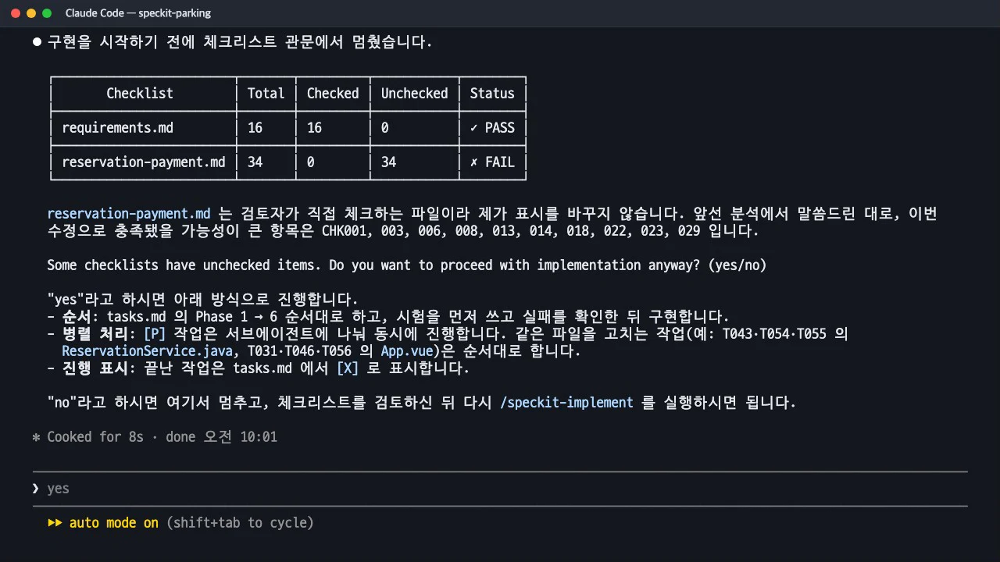
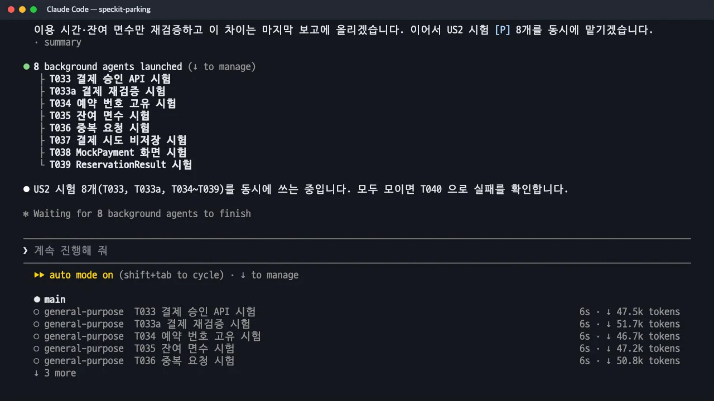
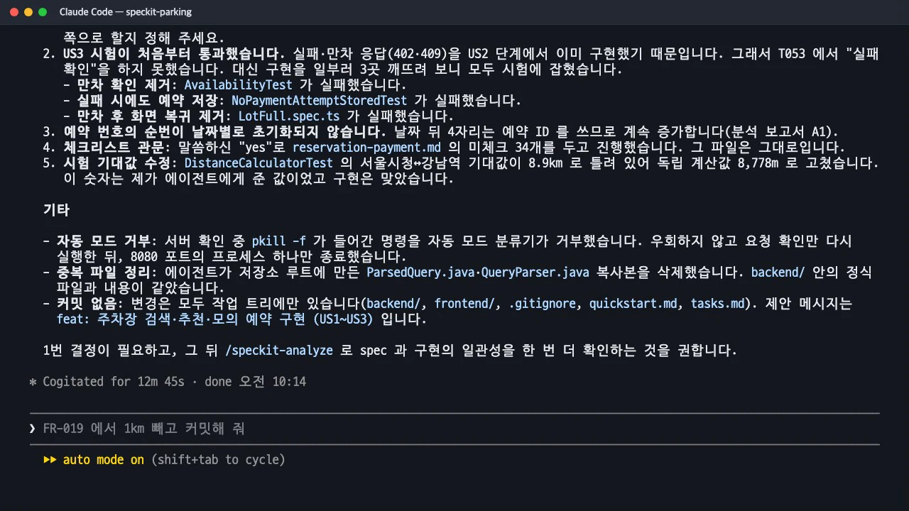

/speckit-implement는 체크리스트 관문을 먼저 확인한 뒤tasks.md를 단계 순서대로 실행합니다. 이 실습에서는[P]작업을 서브에이전트에 나눠 맡기라고 지시해, 14분 동안 서브에이전트가 37번 일했습니다. 관문, 병렬 실행, 시험 결과, 그리고 Claude가 스스로 보고한 어긋난 점까지 봅니다.
무엇을 · 왜#
구현 스킬에 적힌 실행 규칙은 다섯 가지입니다.
| 규칙 | 뜻 |
|---|---|
| 단계별 실행 | 한 단계(Phase)를 끝내고 다음 단계로 넘어갑니다 |
| 의존 존중 | 순서가 있는 작업은 차례로, [P] 작업은 함께 해도 됩니다 |
| 시험 먼저 | 시험 작업을 해당 기능의 구현보다 먼저 진행합니다 |
| 파일 기준 조정 | 같은 파일을 수정하는 작업은 반드시 차례로 진행합니다 |
| 단계마다 확인 | 단계가 끝날 때마다 검증하고 넘어갑니다 |
[P]는 "함께 해도 된다"는 허락일 뿐, 실제로 여러 에이전트에 나눌지는 구현하는 에이전트가 정합니다. 그래서 이 실습에서는 명령 뒤에 나눠 맡기라고 직접 적었습니다. 메인 에이전트는 작업 목록을 읽고 일을 나눠 주고, 결과를 모아 시험을 실행하고, 같은 파일을 고치는 작업을 맡는 조정자가 됩니다.
따라 하기#
- 병렬 지시와 함께 실행합니다.
/speckit-implement tasks.md 에서 [P] 가 붙은 작업은 서브에이전트에 나눠 맡겨 동시에 진행하고, 같은 파일을 고치는 작업은 순서대로 해 줘. - 체크리스트 관문에 답합니다. 구현 전에
checklists/아래 모든 점검표의 체크 상태를 표로 보여 줍니다. 하나라도 미체크가 있으면 멈추고 묻습니다. | Checklist | Total | Checked | Unchecked | Status | |---|---|---|---|---| | requirements.md | 16 | 16 | 0 | ✓ PASS | | reservation-payment.md | 34 | 0 | 34 | ✗ FAIL | "Some checklists have unchecked items. Do you want to proceed with implementation anyway? (yes/no)". 이 점검표는 검토자가 체크하는 파일이라 Claude가 대신 체크하지 않습니다. 실습에서는yes로 넘어갔습니다. 실제 팀이라면 검토자가 34개 항목을 확인하고 체크하거나 범위 밖으로 정리한 뒤 다시 실행합니다.
구현 직전의 체크리스트 관문 표와 yes/no 질문 - 나뉘어 일하는 모습을 봅니다. 시험 작성처럼
[P]가 몰린 구간에서는 입력창 아래 에이전트 목록에 서브에이전트 여러 개가 동시에 표시됩니다. 가장 많을 때는 Phase 4의 시험 8개(T033·T033a·T034~T039)를 서브에이전트 8개에 한꺼번에 맡겼고, 화면에 「8 background agents launched」가 떴습니다. 하나가 끝날 때마다Agent "T025 문장 해석기 구현" finished · 30s같은 줄이 나오고, 메인 에이전트가 결과를 모아 시험을 실행합니다.
US2 시험 8개를 서브에이전트 8개에 동시에 맡긴 순간 - 완료 보고를 끝까지 읽습니다. 성공한 일보다 "사양과 어긋나거나 보류한 점"이 더 중요합니다.

구현 완료 보고: 시험 결과와 사양과 어긋나거나 보류한 점
산출물과 결과#
① tasks.md의 체크. 끝난 작업은 - [ ]가 - [X]로 바뀝니다. 63개가 모두 체크됐습니다.
② 나뉜 일. 서브에이전트는 37번 일했고, 한 번에 6~43초가 걸렸습니다. 메인 에이전트가 직접 한 일은 실패·통과 확인, 같은 파일을 여러 번 고치는 작업(ReservationService.java, App.vue, api.ts), 전체 시험이었습니다.
| 단계 | 서브에이전트가 맡은 작업 |
|---|---|
| Phase 2 기반 | T005·T006·T007(시험), T009·T010·T011·T012·T014·T015(구현) |
| Phase 3 US1 | T017~T023(시험 7개), T025·T026·T030(구현) |
| Phase 4 US2 | T033·T033a·T034~T039(시험 8개를 한꺼번에), T041·T042·T045(구현) |
| Phase 5 US3 | T048~T052(시험 5개) |
| Phase 6 마무리 | T059(추적표 점검), T060(한국어 문구 점검) |
③ 시험과 실행 확인. 백엔드 JUnit 83개와 화면 Vitest 24개가 모두 통과했고 npm run build(타입 검사 포함)도 통과했습니다. 서버를 직접 실행해 API로 확인한 결과도 보고했습니다. "강남역 근처 2시간 주차"는 0.22초에 추천 1곳과 후보 2곳, 승인은 201과 예약 번호 PK-20261113-0001, 같은 키로 다시 보내면 200과 같은 번호, 실패는 402, 새 키로 재시도하면 승인. 화면은 Vitest로만 확인했고 브라우저로 보지는 않았다고 적었습니다.
④ 스스로 보고한 어긋난 점. 이 목록이 다음 장 수렴의 출발점이 됩니다.
| 보고 | 내용 |
|---|---|
| FR-019 일부 미구현 | 결제 요청에 목적지가 없어서 결제 시점에 1km를 다시 확인할 수 없습니다. 사양에서 1km를 빼거나 요청에 목적지를 더해야 합니다 |
| 실패 확인을 못 함 | US3 시험이 처음부터 통과했습니다. 실패·만차 응답을 US2 단계에서 이미 구현했기 때문입니다. 대신 구현을 일부러 세 군데 깨뜨려 시험이 감지하는지 확인했습니다 |
| 예약 번호 순번 | 날짜별로 초기화되지 않습니다(분석 보고서 A1) |
| 시험 기대값 수정 | 거리 시험의 기대값(8.9km)이 틀려 독립 계산값 8,778m로 고쳤습니다. 이 숫자는 메인 에이전트가 서브에이전트에게 준 값이었습니다 |
| 중복 파일 정리 | 서브에이전트가 저장소 맨 위에 만든 QueryParser.java 등 복사본 두 개를 지웠습니다 |
병렬로 맡기면 생기는 일
이 실습에서 실제로 일어난 두 문제가 병렬 실행의 전형적인 위험입니다. 하나는 지시를 받은 에이전트가 지시 안의 틀린 숫자를 그대로 믿는 것(거리 기대값 8.9km)이고, 다른 하나는 엉뚱한 위치에 파일을 만드는 것(저장소 맨 위의 복사본)입니다. 두 가지 모두 메인 에이전트가 전체 시험과 파일 점검으로 잡아냈습니다. 일을 나눌수록 마지막에 모아서 확인하는 단계가 중요합니다.
자동 모드가 막은 명령
서버를 끄는 과정에서 pkill -f가 들어간 명령을 자동 모드의 분류기가 거부했습니다. Claude는 우회하지 않고 8080 포트를 쓰는 프로세스 하나만 골라 종료했다고 보고했습니다. 이름으로 프로세스를 한꺼번에 종료하는 명령은 다른 작업의 프로세스까지 종료할 수 있어 막힌 것입니다.
확인 문제#
`[P]` 작업이 있으면 Spec Kit이 알아서 서브에이전트를 띄우나요?
아닙니다. 구현 스킬의 규칙은 "[P] 작업은 함께 해도 된다"까지입니다. 이 실습에서는 명령 뒤에 "서브에이전트에 나눠 맡겨 동시에 진행하라"고 적어서 Claude Code가 서브에이전트를 띄웠습니다. 같은 파일을 고치는 작업은 [P]가 있어도 차례로 하라는 규칙은 그대로 지켜졌습니다.
체크리스트에 미체크 항목이 있으면 구현은 어떻게 되나요?
점검표마다 전체·체크·미체크 개수를 표로 보여 주고, 미체크가 하나라도 있으면 "그래도 진행할까요?(yes/no)"라고 묻습니다. no면 멈추고, 검토자가 점검표를 정리한 뒤 다시 실행합니다. 모두 체크돼 있으면 묻지 않고 바로 진행합니다.
US3 시험이 처음부터 통과했다는 것은 왜 문제인가요?
헌법 I은 "구현 전에 시험을 실행해 실패하는 것을 확인한다"고 정했습니다. 처음부터 통과하는 시험은 그 시험이 정말 그 동작을 확인하는지 보장하지 못합니다. 이 실습에서는 앞 단계에서 미리 구현된 탓이었고, Claude는 구현을 일부러 깨뜨려 시험이 실패하는지 확인하는 방법(변이 시험)으로 보완했습니다.